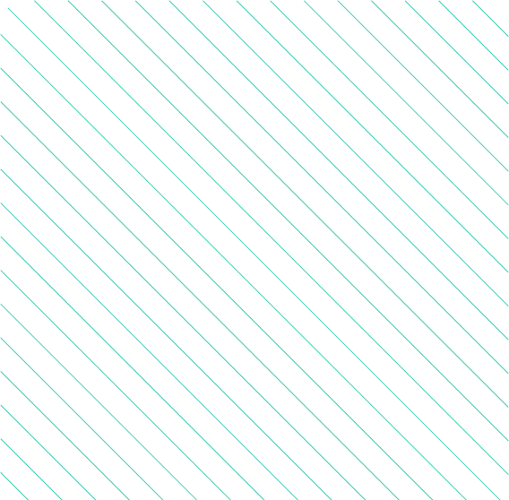

Who I Am
About me
Hi, I`m german speaking Frontend Developer based in
Hannover, Motivated by the limitless opportunities within IT,
I am excited about crafting visually captivating and intuitive
websites and applications.
Flexible in terms of working environments, I can work
effectivley both on-site remotely.
I am open-minded and always looking for personal
challanges to constantly improve my knowledge and
skills.
In my profession, programming isn't just about
writing code; its's creatve form of problem-solving. I
take pride in my ability to distill complex technical
challanges into simple, user-friendly solutions. This
way, I help you achieve your goals and bring your
visions to life.